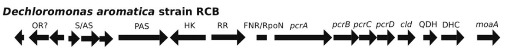

Design
Martian soil is contaminated with a toxic compound, perchlorate, making human life on mars impossible. For our project we use bacteria, which contain a perchlorate reduction system, to eliminate perchlorate from Martian soil. There are several bacteria that can already reduce perchlorate, for example Dechloromonas aromatica. However the model organism E.coli is a better suited bacterium to work with in this project, since it is easier to handle. Since E.coli does not contain a perchlorate reduction system, we transformed the E.coli cells from the bacterial strain DH5α with genes encoding for the perchlorate reduction system derived from Dechloromonas aromatica.
Another aspect of our project is the influence of the gravity on mars on the bacterial growth. This is performed using an random positioning machine (RPM). The bacterial growth under normal gravity and the gravity on mars are compared.
Transformation of E.coli DH5α
Genes coding for perchlorate reduction were introduced in the E.coli DH5α strain. These genes used for the transformation are derived from Dechloromonas aromatica. With these genes these, perchlorate reducing bacteria like Dechloromonas aromatica can reduce perchlorate into chlorite (ClO2) with perchlorate reductase 2 Subsequently, the bacteria can convert chlorite into oxygen (O2) and chloride (Cl-) with chlorite dismutase. The sequence coding for these genes were acquired from a gene database1 and codon optimization for E.coli was performed.
The genes encoding for perchlorate reductase and chlorite dismutase from Dechloromonas aromatica are shown in the figure below:
 Figure 1. The perchlorate reduction genomic island of Dechloromonas aromatica. This includes all the genes necessary for the reduction of perchlorate 3 .Upstream of the FNR/RpoN promoter a group of regulatory genes is present, these genes were not used. The genes downstream of the RpoN promotor are the genes with which the E. coli cells were transformed. The genes pcrA, B, C and D were cloned into one vector, with the use of Gibson assembly. Secondly the genes DHC and QDH, the membrane-associated proteins were cloned together into another vector. Finally, cld and moaA will be cloned separately in two vectors. First the E.coli cells were made competent and thereafter transformed with the plasmids containing the genes encoding for the perchlorate reduction system.
There are a lot of previously made BioBricks. We can choose from a variety of constitutive and inducible promoters to express the genes necessary for perchlorate reduction in E.coli. Next to these promotors other BioBricks may be helpful for our project. For example some BioBricks which can function as an O2 sensor or a promotor which is regulated by the presence of Oxygen.
We choose E.coli as a host because of the extensive molecular knowledge, vast amount of available BioBricks and phylogenetical similarities to the perchlorate reducing bacteria.
After the transformation, experiments were performed to determine whether the transformation had succeeded. This was performed by checking whether oxygen was formed by adding the transformed bacteria to perchlorate.
Random positioning machine (RPM)
Four strains, Pseudomonas putida and three different E. coli strains, were used. These strains were spread on agar plates and these plates were kept under different gravities: the gravity on earth and the gravity on Mars.
Thereafter, with RNA-sequencing there was sought for a promotor which is active by the gravity of Mars. Using differential gene-expression.
References: